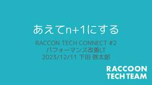

Raccoon Tech Blog [株式会社ラクーンホールディングス 技術戦略部ブログ]
https://techblog.raccoon.ne.jp
株式会社ラクーンホールディングスのエンジニア/デザイナーから技術情報をはじめ、世の中のためになることや社内のことなどを発信してます。
フィード

n+1問題の対応 あえてn+1にする場合もある！？ 2
2
Raccoon Tech Blog [株式会社ラクーンホールディングス 技術戦略部ブログ]
開発チームの下田です。 ラクーンホールディングス技術戦略部ではオフライン+オンラインのエンジニア向けイベントを開催しています。connpassで告知するので、ご覧ください。 Raccoon Tech Connect #2 … "n+1問題の対応 あえてn+1にする場合もある！？" の続きを読む
6日前

【研修資料公開】低レイヤを学ぶ、Linuxカーネルとコンテナの仕組みの研修
Raccoon Tech Blog [株式会社ラクーンホールディングス 技術戦略部ブログ]
こんにちは、羽山です。 今回はラクーンホールディングスの座学研修で私が講師を担当する 3年次 Linux && Docker研修 をご紹介します。当社は教育制度に力をいれており、入社直後に5~6ヶ月間の研 … "【研修資料公開】低レイヤを学ぶ、Linuxカーネルとコンテナの仕組みの研修" の続きを読む
16日前
新卒2年目がゼロから技術選定を行い、コーポレートサイトを完全リニューアルした話
Raccoon Tech Blog [株式会社ラクーンホールディングス 技術戦略部ブログ]
こんにちは、新卒 2 年目の大隈です。 この度、弊社のコーポレートサイトをデザイン面および技術面を 完全リニューアル しました。 こちらの記事では、どのように技術選定を行ったのかと、採用した技術の開発体験についてご紹介し … "新卒2年目がゼロから技術選定を行い、コーポレートサイトを完全リニューアルした話" の続きを読む
1ヶ月前
全社向けにメンバー向けのマネジメント勉強会を開いた話
Raccoon Tech Blog [株式会社ラクーンホールディングス 技術戦略部ブログ]
みなさんこんにちは！刀とYのさいとうです！（M1見ました？令和ロマン面白かったですねー！） さて、私の所属する技術戦略部では、技術に関する勉強会が盛んに行われています。 また、ラクーンの社内ではスペシャリスト資格（通称S … "全社向けにメンバー向けのマネジメント勉強会を開いた話" の続きを読む
2ヶ月前
Reactで初めてページを作成した感想
Raccoon Tech Blog [株式会社ラクーンホールディングス 技術戦略部ブログ]
Reactで初めてページを作成したときに苦労したポイント こんにちは、デザイン戦略部の塚原です。 今年の5月にReactの開発に初めて携わる事ができました。 ボタンをクリックするとモーダルが開き、その中でフォームを送信す … "Reactで初めてページを作成した感想" の続きを読む
3ヶ月前
Illustratorユーザー必見！AI入稿時のチェックを効率化するスクリプトをつくる！
Raccoon Tech Blog [株式会社ラクーンホールディングス 技術戦略部ブログ]
こんにちは、デザイン戦略部のオオイです。 みなさんは普段、イラストレーターを使用したai入稿のチェックにどれくらいの時間をかけていますか？ 今回はイラレで使用できる「入稿時のチェックを自動化するスクリプト」の作成方法を紹 … "Illustratorユーザー必見！AI入稿時のチェックを効率化するスクリプトをつくる！" の続きを読む
3ヶ月前
ミニマムで始めた勉強会「デザインレビュー会」が５周年を迎えるまで
Raccoon Tech Blog [株式会社ラクーンホールディングス 技術戦略部ブログ]
デザイン戦略部のスエノです。 2019年から月1回行っている部内勉強会「デザインレビュー会」が昨年で5周年を迎えました。主催として立ち上げ、現在デザイン戦略部の12名が参加・活動しています。内容はすごくシンプルでスタンダ … "ミニマムで始めた勉強会「デザインレビュー会」が５周年を迎えるまで" の続きを読む
3ヶ月前
PL/SQL と Spring Data JPA で学ぶ Oracle の IDENTITY 列
Raccoon Tech Blog [株式会社ラクーンホールディングス 技術戦略部ブログ]
こんにちは、技術戦略部の水口です。 Oracle Database で自動採番といえば、SEQUENCE を思い浮かべる方が多いのではないでしょうか。Oracle Database 12c で追加された IDENTITY … "PL/SQL と Spring Data JPA で学ぶ Oracle の IDENTITY 列" の続きを読む
4ヶ月前
社内用AIアシスタント「おっさんずナビ」を作った話、そして人間らしく振る舞う重要性を認識した話
Raccoon Tech Blog [株式会社ラクーンホールディングス 技術戦略部ブログ]
こんにちは、羽山です。 みなさんは業務に LLM（生成AI）を活用していますか？ラクーングループでは生成系AI LT大会を開催するなど、積極的な利用を推し進めています。 そこで今回は私がその生成系AI LT大会で発表し、 … "社内用AIアシスタント「おっさんずナビ」を作った話、そして人間らしく振る舞う重要性を認識した話" の続きを読む
7ヶ月前
Webシステムにおける HTTPサーバ機能をどう用意するか？という問題に対して先人達の葛藤の歴史
Raccoon Tech Blog [株式会社ラクーンホールディングス 技術戦略部ブログ]
こんにちは羽山です。 現代の Webシステム界隈は昔よりもはるかに洗練され、初心者からでも簡単に開発方法を学び作れる時代になっています。その反面で例えば Python なら WSGI や gunicorn、Waitres … "Webシステムにおける HTTPサーバ機能をどう用意するか？という問題に対して先人達の葛藤の歴史" の続きを読む
9ヶ月前